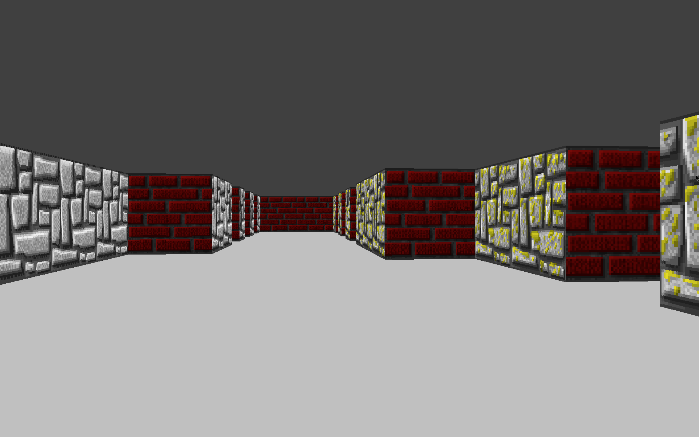

Portfolio
Personnal Projects
42 School Projects
You can find all my projects for 42 in this repository or you can click on each project's name to go directly to the relevent code.
ft_transcendence
The goal of this project is to create a website which allow people to play Pong locally. While the base case for the project is very simple, we added a lot of interesting features like a login system and user profiles, match and tournament histories, the ability to play the game remotely or play against the CPU.
> '(css django docker git html javascript nginx python teamwork)
ft_irc
The goal of this group project was to write an IRC server capable of handling many simultaneous connections. I was in charge of writing the network code as well as implementing the QUIT, NICK, USER and PASS commands.
> '(c++ git network-programming sockets teamwork)
C++ Modules
This project is an introduction to object-oriented programming and C++. This project consists of many small exercises which aims to cover most of the important features of C++98 including class polymorphism and templates. While this project uses C++98, it is a good introduction to the simplest (in terms of number of features) of C++. This provides good fundamentals and is a great starting point to later start learning more moder version of C++.
> '(c++ git object-oriented-programming)
cub3d

The goal of this project is to implement a small FPS game using ray-casting.
> '(c git teamwork graphics-programming)
inception
This project is an introduction to virtualization and Docker. The goal is to setup a Wordpress website using Docker.
> '(docker mariadb networking nginx wordpress)
netpractice
The goal of this project is to learn more about networking and TCP/IP by configuring small-scale networks.
> '(networking)
minishell
The goal of this project is to create a simpler version of Bash.
> '(c git processes shell system-programming teamwork unix-pipes)
philosophers
This project serves as an introduction to multithreading and how to synchronize them using mutexes. The goal of this project is to write a program which solves the dining philosophers problem.
> '(c git multithreading system-programming)
fdf
This project is about representing a landscape as a 3D object in which all surfaces are outlined in lines.
> '(c git graphics-programming)
push_swap
This project serves as an introduction to algorithms and computational complexity. This project will make you sort data on a stack, with a limited set of instructions, using the lowest possible number of actions. To succeed you'll have to manipulate various types of algorithms and choose the most appropriate solution (out of many) for an optimized data sorting.
> '(algorithmic-complexity algorithms c git)
minitalk
The purpose of this project is to code a small data exchange program using UNIX signals. As a bonus, the program also handles UNICODE characters and provide an acknowledgement mechanism so that the server can inform the client when it has received a complete message.
> '(c git signals system-programming)
get_next_line
This projects purpose is to make sure you are confortable working with pointers and null-terminated strings. The goal is to create a function similar to getline(3) which reads an input stream and return it one line at a time.
> '(c git system-programming)
born2beroot
The goal of this project is to setup install and configure a Linux virtual machine. This project serves as an introduction to Linux and virtual machines. The goal is to install, configure and monitor a Debian or CentOS VM. Among other things this required to create partitions using LVM, to setup a firewall (UFW), to configure AppArmor and to create strong password policy using Pluggable Authentication Modules (PAM).
> '(cybersecurity linux shell system-administration)
ft_printf
This project serves as an introduction to variadic functions. It is a re-implementation of the C stdlib function printf(3) which handles the following conversions: c, s, p, d, i, u, x, X and %.
> '(c git system-programming)
libft
This project is about coding a C library. It will contain a lot of general purpose functions future programs will rely upon. The library contains a lot of functions of questionnable utility and lack some useful ones. For exemple functions related to handling linked lists, but since C has no concept of generic programming these functions apply only to a specific struct. Some other functions can easily be replaced i.e bzero by memset. This is why I wrote mlc, a efficient library which contains less useless functions and more useful ones. It a more optimized libc inspired by musl libc that I ended up using in my projects.
> '(c git system-programming)
42 Piscine
This repository contains all the exercices I did for the Piscine, which is what the one-month recruitement process for 42 is called.